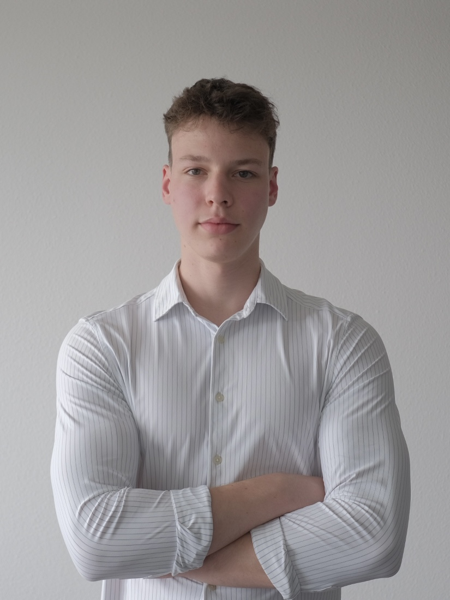

Gergő Honyák
Data science student·momentum trader
Data Science & AI pre-master at TU/e, working where machine learning meets quantitative finance. The curve behind me is my momentum strategy: backtested from 2016, trading live capital since February 2026.
My largest project.
It started in the momentum literature (Jegadeesh & Titman, Antonacci's dual momentum) and grew into MOM_BROAD: rank about 515 US large caps by relative strength, hold the strongest seven while their trend confirms it, and step aside when volatility spikes. Every rule was tested with transaction costs, and the ones that did not earn their place were cut. Since February it has been live with real money, riding the strongest names: mostly chips and semis.
Tools I'm most experienced with.
The ones I reach for most, one at a time.
Projects I'm most proud of.
The person behind the work.

I'm doing the Data Science & AI pre-master at TU/e, coming from the Applied Data Science & AI bachelor at BUas.
I worked as a RAG intern, deploying the assistant on GCP. These days I'm mostly picking up new things in statistics and ML, and trying not to lose my own money on the quant strategies.
I started programming in Python back in 2022, building little things with Flask. Then I moved into data science at BUas and worked through the whole ladder: regression, classification, clustering, then the heavier stuff like computer vision, NLP, and MLOps.
What I enjoy most is finding patterns and solving problems with data, so when I started reading about quantitative finance it clicked: modelling markets, measuring risk, trying to squeeze out returns. That's what pulled me into building MOM_BROAD, and into IMC Prosperity 4, where I competed solo against 18,800 teams and finished 223rd overall, 1st in the Netherlands on the manual round.
The book that first got me into quant was Marcos Lopez de Prado's Advances in Financial Machine Learning, still the one I go back to most.
What live money has taught me
Since February I've had real capital in the strategy, enough that it matters to me, and it has had its ups and downs. Some of it has been very good: two weeks after the algo put me into Moderna, the position was up 180%. It has also handed me the most expensive lesson I've paid for so far.
The algo flagged two new semiconductor names and I bought both. They each dropped about 10% on the same day I opened them, and by that evening my feed was wall-to-wall certain this was the AI bubble finally popping. It clearly wasn't. I panic-sold both anyway, watched them turn straight back up the next morning, and turned what would have been a large profit into a real loss.
That is the whole argument for building the system in the first place. The rules exist precisely to strip out the part of me that reads sentiment and reacts to it, and the one time I overrode them, sentiment is exactly what cost me money. So now I trust the algos and let them run. I manage my own money this way, along with my family's and my girlfriend's, and I enjoy it far more than I expected to.